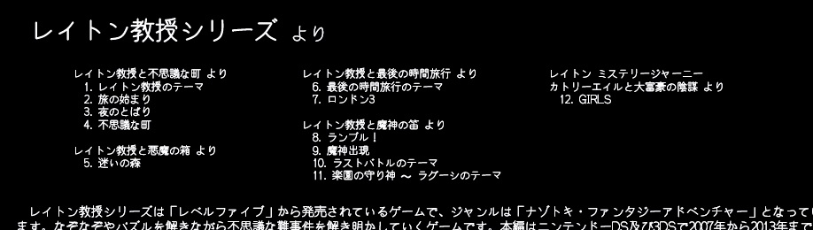
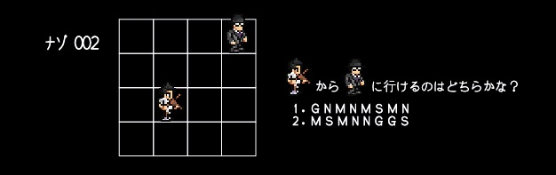

答え合わせのページにアクセスしてくれてありがとう。
今日のナゾは、少し難しかったかな？

この「夜」と「魔」は何を表しているのだろう？
実はすぐ近くに答えがあったんだ。

そう、この「夜」は「3. 夜のとばり」、
「魔」は「9. 魔神出現」と考えると3 + 9 = 12になるんだね。
すると「旅」「迷」は･･･
「2. 旅の始まり」、「5. 迷いの森」だから、答えは10だ！

今度はマス目を進むナゾのようだね。
1か2の順に進むと、ビオラ奏者（！）から、怪しい黒服男のマスに進むことができるようだ。
1と2を見ると、アルファベットが並んでいるね。
NGMSの4種類のアルファベットが存在していることに気付いただろうか？
このナゾは、実はパンフレットだけを見ていても解けないんだ。
どうかな？
NGMSの演奏会では、ロビーや舞台上に↓の板が存在していることに 気付いただろうか？

これはコントラバスの表板なんだ。
NGMS初期の頃から毎回、NGMSと演奏会を共にしている、NGMSの看板なんだよ。
そう、NGMSの文字は、それぞれ↑←→↓を表していたんだ。
答えは1。
2は元の位置に戻ってしまうね。
ちなみにこのビオラ奏者は、実はNGMSの団長なんだ。
黒服の怪しい男は誰かって？
それは･･･？
NGMSのホームページは こちら
Twitterもぜひフォローしてくださいね！！